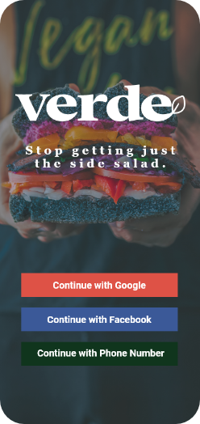

Understand the decision.
We explored discovery habits and the information people look for when dietary preferences matter.
RESTAURANT DISCOVERY / UX + UI / TEAM CONCEPT
A mobile concept exploring a better way for vegetarian and vegan diners to discover restaurants that fit, without digging through every menu.
EDITORIAL COVER / ORIGINAL PROJECT ARTWORK APPEARS BELOW
01 / THE PROBLEM
For people with vegetarian or vegan preferences, finding a restaurant can mean checking menu after menu before making a decision.
Our design question: How might we help people discover suitable restaurants without having to inspect every menu individually? Verde explores a more direct path from searching to choosing.
We looked into how people search for restaurants, what they need to know before choosing, and where dietary preferences create friction. Small-scale research gave the concept a starting point.
These figures are research participation counts from the case study, not measures of app performance. A small sample informed the concept; it doesn't represent all diners.
The challenge wasn't adding more options. It was helping people understand their options sooner, with a familiar journey from search to comparison.
We explored discovery habits and the information people look for when dietary preferences matter.
We worked through search and comparison flows to reduce unnecessary steps and make restaurant choices feel familiar.
Usability feedback pointed us away from a prominent search button and toward an easier-to-find search bar, restaurant cards, and a map.
Early concepts emphasized a search button. Feedback favored an immediately visible search bar. That changed how we thought about the first interaction, and the direction evolved to include restaurant cards and a map.
A dedicated button made search a separate step.
Visible search, restaurant cards, and a map brought discovery into one flow.
These simplified diagrams explain the documented interaction change. They are editorial illustrations, not original prototype screenshots or proof of a shipped product.
These visuals come from the original portfolio, not newly invented mockups. The logo, opening-screen artwork and mobile concept document Verde's earlier visual direction.
This was a two-person UX/UI collaboration. The imagery documents the team's concept rather than a launched application.
See archived case study ↗

All images retain their original proportions. Open any image to inspect the complete source artwork.
The concept evolved toward a more approachable restaurant search. Early feedback was encouraging, but more work was needed to use screen space effectively and validate the flow with more diners.
That is part of the process I value: seeing where an idea is promising, noticing where it falls short, and knowing what to test next.
Research details and earlier prototypes are documented in the original Verde case study ↗.